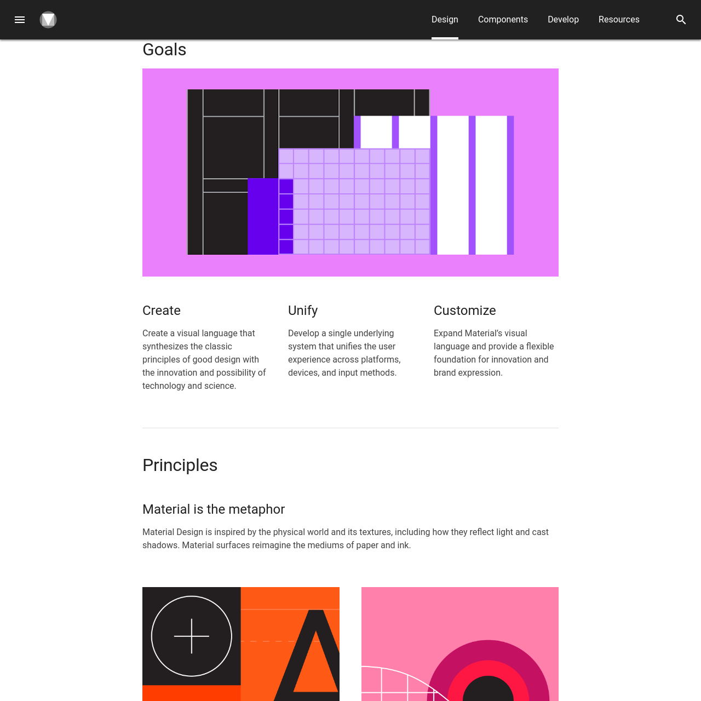

Система как инфраструктура

Один из самых тихих сдвигов в истории профессии: дизайн перестаёт быть актом и становится инфраструктурой. Спецификация компонентов оказывается важнее самих компонентов. Эта глава – про эпоху, в которой родились почти все дизайн-системы, которые сегодня используют наши герои в работе.
Apple HIG
В период 2005–2007 годов Apple разработала Human Interface Guidelines (HIG) – один из первых полностью артикулированных наборов принципов дизайна для цифрового продукта. Три стержневых идеи определяют структуру: ясность (clarity) – каждый элемент должен быть ясным, иметь одну функцию, не конкурировать за внимание; уважение (deference) – интерфейс должен служить контенту, не конкурировать с ним; глубина (depth) – визуальная иерархия должна показывать отношения, навигацию, последовательность.
Это был прямой перевод рамсовских принципов в цифру. Айв открыто говорит, что его вдохновили работы Рамса с Braun. HIG становится не просто набором правил, а кодификацией философии: как дизайнер должен мыслить о своей работе.
Material Design
Material Design, представленный Google на конференции I/O 2014, является парадигматическим сдвигом по нескольким причинам. Во-первых, это не просто система рекомендаций, а полная философия дизайна, воплощённая в метафоре материала, который имеет физические свойства: поверхности, глубину, движение, реакцию на взаимодействие.
Во-вторых, это философия открытости: Material Design общедоступен. Google не держит эту систему в секрете (в отличие от IBM, Apple, Braun). Она публикует спецификации, компоненты, исходные коды, инструменты. Это инфраструктура, которую может использовать любой разработчик.
Методология проектирования становится общей собственностью.


Дизайн-системы становятся нормой
После Material Design дизайн-системы перестают быть исключением. Почти каждая значительная компания разрабатывает свою: Uber (Base Web), Shopify (Polaris), Microsoft (Fluent Design System), IBM (Carbon Design System) и десятки других. Это не просто техническое удобство. Дизайн-система становится средством явного кодирования культурных ценностей.
Принципы Intercom
Например, Design Principles от Intercom (публичные, 2018) гласят: важны связанные модульные системы; осознанность по умолчанию, гибкость в деталях; следование основам; личностный контекст (дизайн отражает, что за контентом стоят люди); важен результат – артефакт это не файл в Figma, это то, что видит пользователь.
Когда Маша Черн рассказывает про ребрендинг TON или Алексей Пьянков – про дизайн-ДНК Pragmatica, они опираются на язык, сформировавшийся именно тогда.
Артефакт – это не файл в Figma, это то, что видит пользователь.
– deFindings